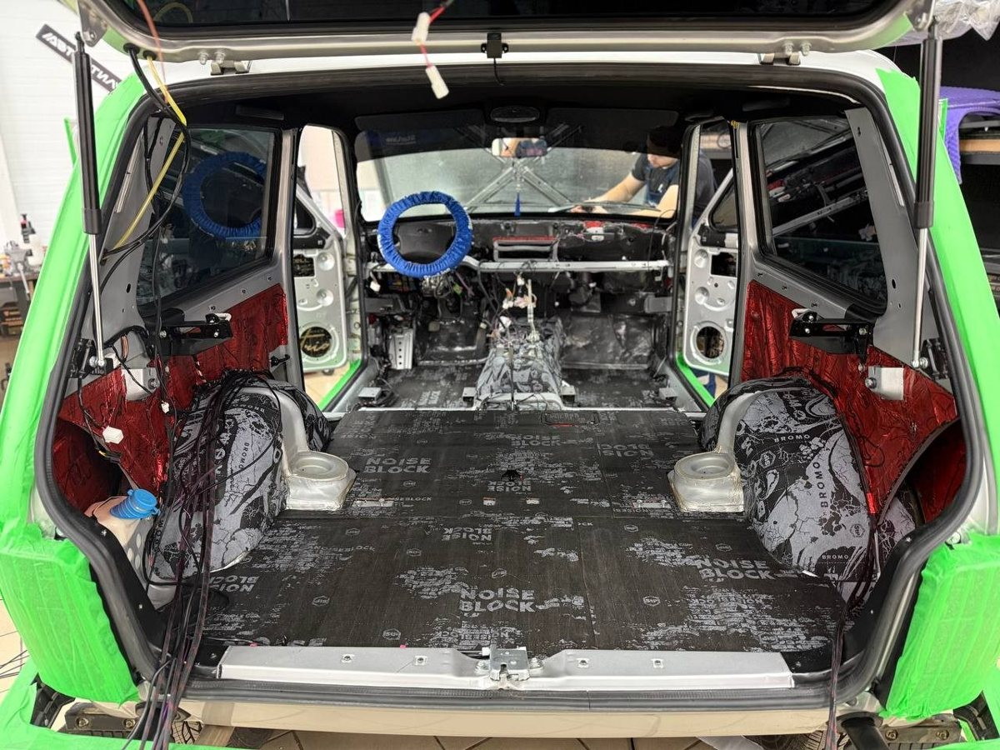
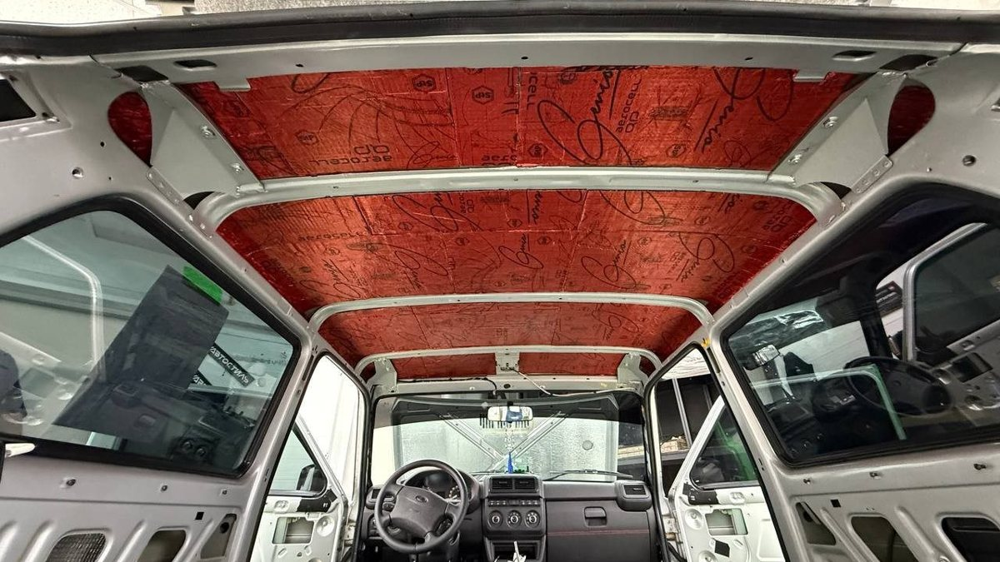
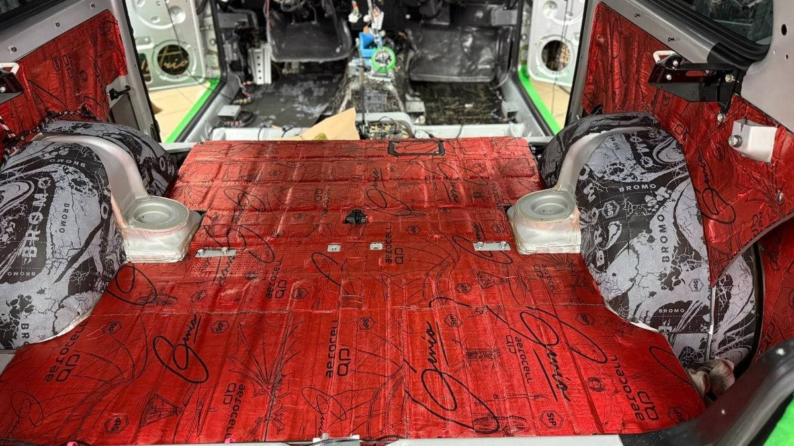

Трасса М8 на Вологду, ноябрь, мокрый асфальт. Нива идёт ровно, но на девяноста вы уже не слышите радио, а пассажиру приходится повторять каждую фразу. Снизу воет, в арках шелестит шипованная резина, где-то сзади дребезжит. Через пару часов такой дороги выходите из машины, будто отстояли смену у станка.
Нива громкая с завода, и все, кто на ней ездит, это знают. Шумоизоляция автомобиля здесь не прихоть, а способ доехать до Вологды и не устать от гула. Вопрос не в том, можно ли сделать её тише, а в том, с какого места начинать, чтобы деньги не ушли в то, что почти ничего не даёт. Речь здесь о классической Ниве: Legend, Bronto, Спорт.

У Нивы несколько источников шума, и звучат они по-разному. Коробка и раздатка под полом дают вой, который растёт вместе со скоростью и сильнее всего слышен в районе тоннеля. Мотор слышно через щит моторного отсека, особенно при разгоне. Колёса и щебень бьют в арки. Тонкие двери и крыша пропускают дорогу и ветер, а в дождь крыша ещё и барабанит.
Проедьтесь с этим списком в голове. Если больше всего раздражает вой снизу на трассе – это одна задача. Если грохот в арках на просёлке – другая. Нива почти никогда не бывает тихой целиком, но то, что мешает именно вам, обычно можно убрать заметно.
Перед шумоизоляцией проверьте, исправна ли сама машина. Если раздатка гудит сильнее обычного, кардан даёт вибрацию на скорости, а подшипник просит замены, никакой материал на полу этого не спрячет. Вибрация пройдёт через кузов, а вы будете злиться, что заплатили зря.
Обычный нормальный шум Нивы шумоизоляция снижает. Звук неисправности – нет. Это стоит развести до того, как снимать сиденья.

Логика простая: начинать оттуда, где шума больше всего и где он ближе к вам. У Нивы это пол с тоннелем и щит моторного отсека. Именно через них в салон идут вой трансмиссии и мотор. Пол – самая большая площадь в машине, и на трассе разница чувствуется сразу.
Следом – арки. Зимой на шипах и летом на щебёнке именно они дают тот самый шелест и стук камней. Арки шумоизолируют и изнутри салона, и снаружи, и каждый вариант имеет свои особенности: какой подходит вашей машине, лучше обсуждать на осмотре.
Двери, крыша и багажник – дальше. Двери у Нивы гулкие, и если вы собираетесь ставить нормальную акустику, без их проработки музыка будет дребезжать вместе с металлом. Крыша спасает от барабанной дроби в дождь и от гула на скорости. Багажник закрывает шум заднего моста и колёс.
Можно делать всё сразу, можно по этапам. Если бюджет ограничен, пол с тоннелем и щит дают больше эффекта на вложенные деньги, чем, например, одни двери.
Лишние килограммы материала Ниве ни к чему. Хорошая шумоизоляция – это правильный материал в правильном месте, а не максимальная толщина везде.
Второе – вода. Нива ездит туда, где мокро и грязно, а зимой ещё и по реагентам. Материалы на полу и в дверях не должны держать влагу у металла, а дренаж должен остаться открытым. Иначе вместо тишины через пару лет получится ржавчина под ковром.
Прокатитесь по трассе и запишите, что раздражает сильнее: вой снизу, арки, двери, крыша. Скажите об этом мастеру прямо, с этого и начнётся расчёт.
Мы в Ярославле – студия «Автостиль», проспект Октября, 82б. Среди наших работ есть Нива Bronto и Нива Спорт. Монтаж идёт вне зоны видимости клиента, и мы делаем фотоотчёт каждого этапа и каждого слоя материала. Подробнее – на странице про шумоизоляцию. Стоимость посчитаем по вашей Ниве: +7 902 220-75-55.